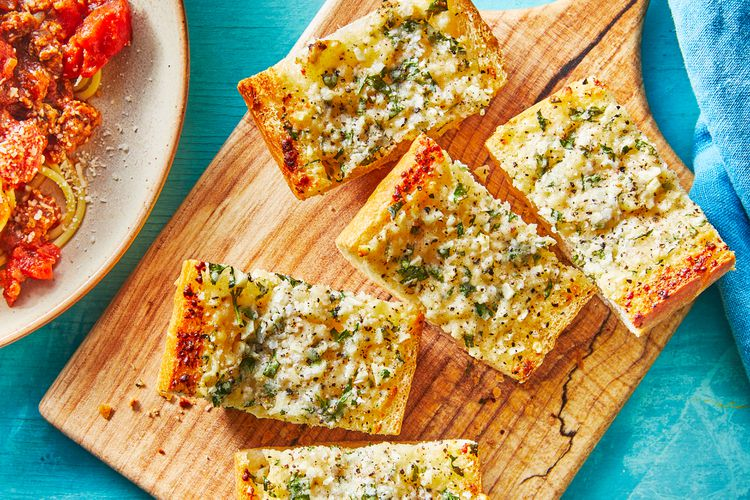

Lasagna

Description
Garlic bread is the perfect way to finish off a big plate of spaghetti, or a square of lasagna, or even stuffed pasta like chicken cannelloni. We would love a piece of garlic bread with pot roast, too. Which is why it's great that this bread side is very easy to make—and can even be made and frozen for future meals.
Ingredients
- 1/2 cup unsalted butter, softened
- 6 large garlic cloves, peeled and minced (about 2 Tbsp.)
- 2 Tbsp. chopped fresh or freeze-dried parsley
- 1/2 cup grated Parmesan cheese
- 1/2 tsp. salt
- 1/4 tsp. black pepper
- 1 (16 oz.) loaf French bread
Steps
- Preheat oven to 400°F. Cover a rimmed baking sheet with aluminum foil.
- In a bowl, use a fork to mix together the butter, garlic, parsley and Parmesan until it is thoroughly combined.
- Cut bread in half horizontally.
- Spread garlic butter on both halves of bread and sprinkle with salt and pepper.
- Place bread on a baking sheet and bake 10 minutes, until butter is melted and bread is lightly browned. Slice and serve warm.